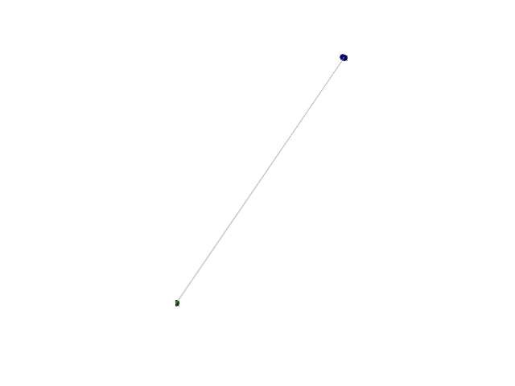

pylayers.antprop.signature.Signature.backtrace¶
- Signature.backtrace(tx, rx, M)[source]¶
backtrace given image, tx, and rx
Parameters: tx : ndarray (2x1)
transmitter
rx : ndarray (2x1)
receiver
M : ndarray (2xN)
N image points obtained using self.image method
Returns: isvalid : bool
True if the backtrace ends successfully
Y : ndarray (2 x (N+2))
sequence of points corresponding to the seek ray
Notes
For mathematical details see :
@INPROCEEDINGS{6546704, author={Laaraiedh, Mohamed and Amiot, Nicolas and Uguen, Bernard}, booktitle={Antennas and Propagation (EuCAP), 2013 7th European Conference on}, title={Efficient ray tracing tool for UWB propagation and
localization modeling},year={2013}, pages={2307-2311},}
Examples
>>> import matplotlib.pyplot as plt >>> import numpy as np >>> from pylayers.gis.layout import * >>> from pylayers.antprop.signature import * >>> L = Layout() >>> L.dumpr() >>> seq = np.array([[1,5,1],[1,1,1]]) >>> s = Signature(seq) >>> tx = np.array([4,-1]) >>> rx = np.array([1,1]) >>> s.ev(L) >>> M = s.image(tx) >>> isvalid,Y = s.backtrace(tx,rx,M) >>> fig = plt.figure() >>> ax = fig.add_subplot(111) >>> l1 = ax.plot(tx[0],tx[1],'or') >>> l2 = ax.plot(rx[0],rx[1],'og') >>> l3 = ax.plot(M[0,:],M[1,:],'ob') >>> l4 = ax.plot(Y[0,:],Y[1,:],'xk') >>> ray = np.hstack((np.hstack((tx.reshape(2,1),Y)),rx.reshape(2,1))) >>> l5 = ax.plot(ray[0,:],ray[1,:],color='#999999',alpha=0.6,linewidth=0.6) >>> fig,ax = L.showG('s',fig=fig,ax=ax) >>> plt.show()
(Source code, png, hires.png, pdf)

{kind=link}
{kind=link}